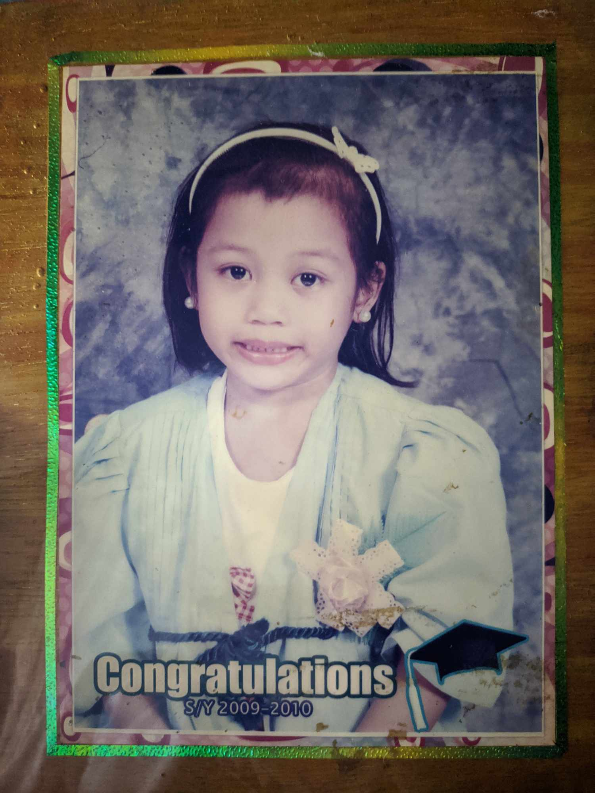
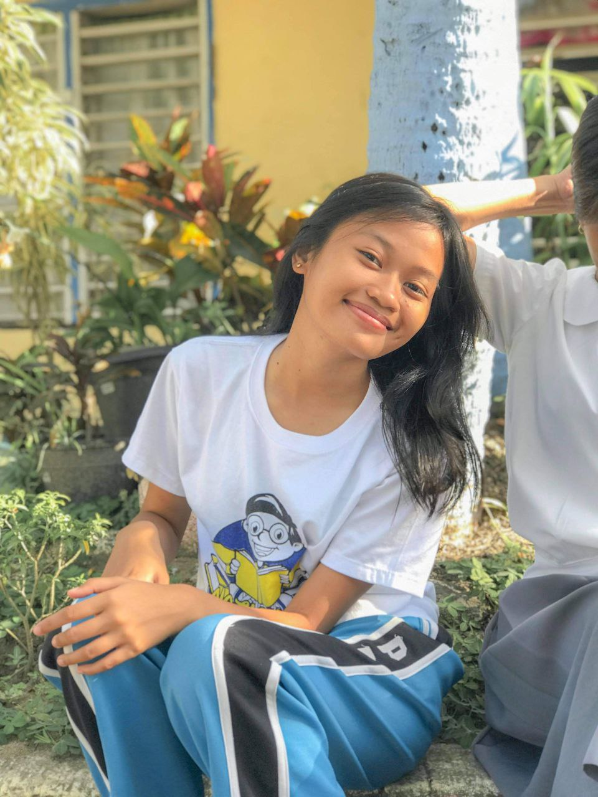
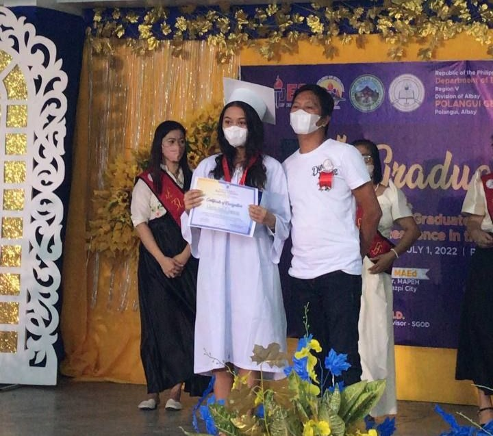
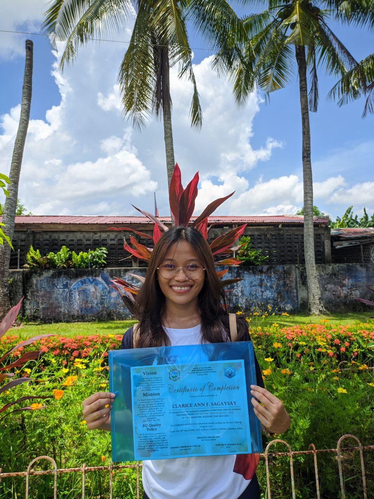

Educational Background
-
2008-2010: (Kindergarten) Ubaliw Daycare Center
When I was 5 years old and in kindergarten, I struggled with shyness and had difficulty making friends. Fortunately, I eventually found true friends who have remained by my side to this day. Even at that young age, I dreamed of becoming an engineer because I was fascinated by cars and buildings. I have vivid memories of enjoying sweets, which unfortunately led to some broken teeth. Looking back at this old picture, I recall how my mom insisted on taking it, resulting in my forced smile being quite evident.
2010-2016: (Elementary) Polangui South Central School
During elementary school, I had many friends, but it was also a challenging time because we were quite immature. However, it's understandable since we were just innocent kids back then. I'm grateful for the memories I've cherished until now because they've shaped who I am today and helped me navigate through my elementary days.
-
2016-2020: (High School) Polangui General Comprehensive High School
My mother always emphasized the importance of cherishing my high school years as they were supposed to be some of the happiest moments of my life, and indeed they were. High school taught me numerous valuable lessons, including dealing with heartbreaks, understanding the essence of friendship, learning how to skip classes, and expanding my social circles. These experiences, shared by many teenagers, made my high school years the best ones yet, and I'm grateful for the memories that still bring a smile to my face whenever I reminisce about them.
2020-2022: (Senior High School) Polangui General Comprehensive High School
I acknowledge that my senior high school year was challenging due to the pandemic. It was difficult to adapt to self-study amidst blended learning. However, the pandemic had a silver lining as it fostered a stronger bond with my family. I had more time to spend with my loved ones, which made me appreciate the importance of family-oriented activities. Although it was a tough year, it also had its enjoyable moments. I'm grateful for the lessons learned and the experiences gained during that time.
-
2022-Present: (College) Bicol University Polangui
College offers a plethora of new experiences compared to high school. It signifies new beginnings, forging new friendships, and adapting to a fresh environment. Currently, I'm fortunate to be surrounded by a supportive group of peers who uplift and assist each other. I'm grateful for the time spent with them during my college years, and I hope the bonds we've formed will endure for a long time.